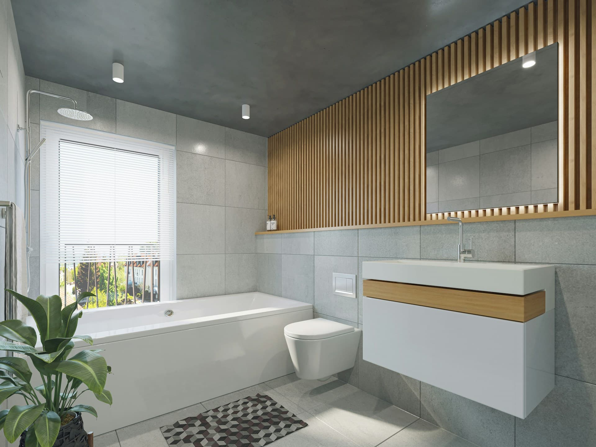
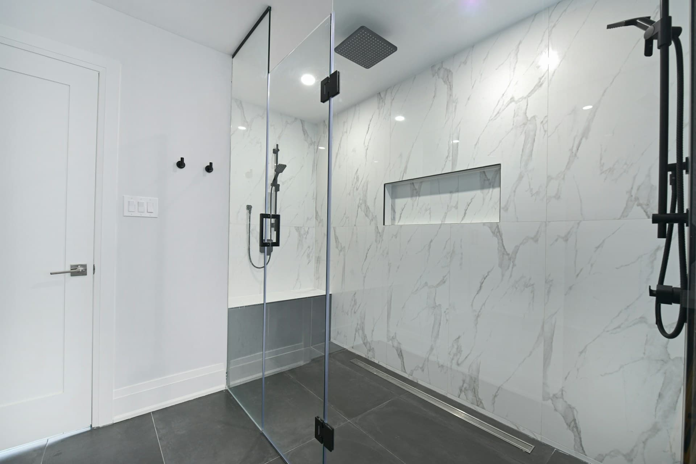
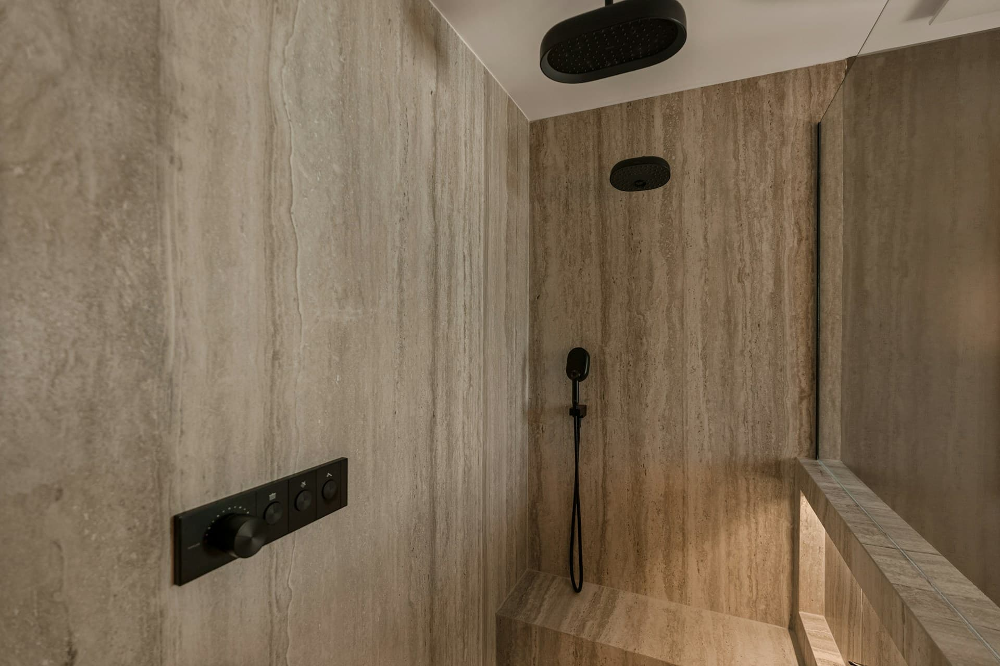

Walk-In Shower
Often compared when stepping over a tub wall feels less practical, the enclosure takes up too much visual space, or the room needs easier everyday access.
Bathroom remodeling, compared clearly
Compare shower, tub, accessibility, and full-room planning options around layout limits, cleaning effort, bathing preference, and long-term daily use before moving into contractor outreach.
Start with how the bathroom works today, then compare the remodeling direction that addresses the real friction points.
Remodeling Directions
Some homeowners are trying to remove an underused tub. Others are dealing with hard-to-clean surfaces, limited storage, difficult entry, or a layout that wastes space. These paths organize those decisions so the next step is easier to compare.
Often compared when stepping over a tub wall feels less practical, the enclosure takes up too much visual space, or the room needs easier everyday access.
Usually considered when the tub is rarely used and the room would function better with more open floor area, simpler cleaning, and a shower-first routine.
Relevant when soaking comfort, family bathing, or supported seated use matters more than maximizing shower space.
Useful when entry, reach, turning space, or steadier movement through the bathroom is becoming a bigger part of the decision.
Best when the layout still works but outdated wall finishes, poor lighting, worn surfaces, or hard-to-maintain materials are dragging the room down.

Everyday Use & Space Logic
Many projects start with small frustrations that repeat every day: towels stored too far from the shower, weak lighting at the mirror, hard-to-clean grout, or a tub edge that no longer feels easy to step over.
Once those friction points are named, the room is easier to compare. Storage, bathing preference, maintenance, movement, and long-term usability stop feeling like separate decisions.
Cleaning ease and fewer visual interruptions
Storage that supports the way the room is actually used
Layout changes that reduce crowding and awkward turning
Surface and fixture choices that stay practical over time
Material & Finish Perspective

Tile, acrylic wall systems, glass, and fixture finishes all change how much wiping, scrubbing, and long-term upkeep the bathroom asks for. The right choice depends on whether the priority is durability, lower maintenance, or a more custom material mix.
Lighting also shapes the result. Better mirror lighting, a clearer shower zone, and improved visibility around storage often do more for daily use than decorative upgrades alone.
Planning the Upgrade Path
The first comparison is often between stepping in, stepping over, and how much of the room should support showering versus soaking.
Once the fixture direction is clearer, the conversation usually moves toward wipe-down surfaces, wall systems, and fixture tone.
Future mobility, aging in place, guest use, and family needs often change which layout and fixture choices make the most sense long term.

Featured Upgrade Focus
One homeowner may be deciding between a walk-in shower and keeping a tub. Another may be comparing accessibility needs, storage fixes, better wall materials, or lighting that makes the room easier to use early and late in the day.
That is why the platform keeps the focus on trade-offs: space, maintenance, bathing preference, support needs, and long-term usability all influence which path deserves a closer look.
View Bathroom SolutionsFAQ
The site is an independent referral platform. It helps homeowners compare bathroom remodeling solutions and connect with independent contractors rather than providing direct renovation services.
Yes. The site is designed for the early stage, where layout, comfort, finish direction, and access needs are still being weighed.
Not at all. Many accessibility-focused improvements can be integrated into calmer, more residential layouts with thoughtful material and fixture choices.
That is a common starting point. Comparing bathing preference, cleaning effort, room proportions, and long-term use can make the right direction more visible.